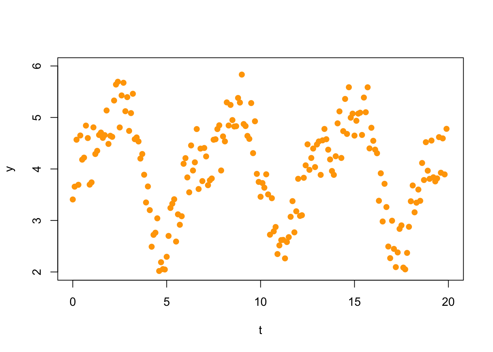

Section 10 Problem Set 10
Due: Friday December 10, 5PM, the last day of classes.
Here is an Rmd Template for PS10,
Important Notes:
- This is a long assignment, but I am designing class so that you can get much of it done during class.
- In parentheses at the beginning of each problem, I indicate the day in class that we will discuss the material. We may even work on it in class that day.
- On Friday December 3, most of the class will be dedicated to working on Problems 10.4-10.7.
10.1 Projection Onto Subspace (with an orthogonal basis)
(Mon 11/29) You can do this one by hand or by R. On Exam 2 you found the basis below for the set of palindromic vectors in \(\mathbb{R}^5\). Note that the basis is orthogonal. \[ \mathbf{P} = \left\{ \begin{bmatrix} a \\ b \\ c \\ b \\ a \end{bmatrix} \mid a,b,c \in \mathbb{R} \right\} = \mathsf{span}\left\{ \begin{bmatrix} 1 \\ 0 \\ 0 \\ 0 \\ 1 \end{bmatrix}, \begin{bmatrix} 0 \\ 1 \\ 0 \\ 1 \\ 0 \end{bmatrix}, \begin{bmatrix} 0 \\ 0 \\ 1 \\ 0\\ 0 \end{bmatrix} \right\} \]
The vector \(w\) below is not a palindrome. Find the orthogonal projection \(\hat w = {proj}_\mathsf{P}(w)\) of \(w\) onto \(\mathsf{P}\). \[ w= \begin{bmatrix} 5 \\ 4 \\ 3 \\ 4 \\ 6 \end{bmatrix}. \]
Compute the residual vector \(z = w - \hat w\) and show that it is orthogonal to \(\mathsf{P}\).
The vector \(w'\) below seems like a good approximation of \(w\) by a palindromic vector. \[ w'= \begin{bmatrix} 5 \\ 4 \\ 3 \\ 4 \\ 5 \end{bmatrix}. \] Find the distance between \(w\) and \(\hat w\) and \(w\) and \(w'\) to show that, in fact, \(\hat w\) is the better approximation of \(w\) by a vector in \(\mathsf{P}\).
10.2 Least-Squares Projection Onto Subspace (without an orthogonal basis)
(Wed 12/1) On previous assignments we have found bases of the Fibonacci subspace \(F\) and the zero-sum space \(Z\) of \(\mathbb{R}^5\) shown below, \[ F = \left\{ \begin{bmatrix} a \\ b \\ a + b \\ a + 2 b \\ 2 a + 3 b \end{bmatrix} \mid a,b \in \mathbb{R} \right\} = \mathsf{span}\left\{ \begin{bmatrix} 1 \\ 0 \\ 1 \\ 1 \\ 2 \end{bmatrix}, \begin{bmatrix} 0 \\ 1 \\ 1 \\ 2 \\3 \end{bmatrix} \right\}. \hskip5in \] \[ Z = \left\{ \begin{bmatrix} a \\ b \\ c \\ d \\ e \end{bmatrix} \mid a+b+c+d+e=0 \right\} = \mathsf{span}\left\{ \begin{bmatrix} 1 \\ 0 \\ 0 \\ 0 \\ -1 \end{bmatrix}, \begin{bmatrix} 0 \\ 1 \\ 0 \\ 0 \\ -1 \end{bmatrix}, \begin{bmatrix} 0 \\ 0 \\ 1 \\ 0 \\ -1 \end{bmatrix}, \begin{bmatrix} 0 \\ 0 \\ 0 \\ 1 \\ -1 \end{bmatrix} \right\}. \hskip5in \] Let \(v = \begin{bmatrix} 4\\ -1 \\ 2 \\ 1 \\ -2 \end{bmatrix}\).
Find the least-squares projection \(\hat v\) of \(v\) onto \(F\). Find the residual \(z\) and show that it is in \(F^\perp\). Find the distance from \(v\) to \(F\).
Find the least-squares projection \(\hat v\) of \(v\) onto \(Z\). Find the residual \(z\) and show that it is in \(Z^\perp\). Find the distance from \(v\) to \(Z\).
10.3 Pseudoinverse and Projection
(Wed 12/1) Consider the following subspace of \(\mathbb{R}^4\) and vector \(b \in \mathbb{R}^4\), \[ W = span\left\{ \begin{bmatrix} 1 \\ 2 \\ -1 \\ -2 \end{bmatrix}, \begin{bmatrix} 1 \\ 2 \\ 3 \\ 4 \end{bmatrix}, \begin{bmatrix} 1 \\ 0 \\ 1 \\ 0 \end{bmatrix} \right\}, \hskip.6in b = \begin{bmatrix} 9 \\ 5 \\ 5 \\ 8 \end{bmatrix}. \] If we put the basis vectors into the columns of a matrix \(A\), then \(W = Col(A)\) is the column space of \(A\).
(A = cbind(c(1,2,-1,-2),c(1,2,3,4),c(1,0,1,0)))## [,1] [,2] [,3]
## [1,] 1 1 1
## [2,] 2 2 0
## [3,] -1 3 1
## [4,] -2 4 0b = c(9,5,5,8)Perform a matrix computation on A to show that the basis is not orthogonal.
Show that b is not in W by augmenting and row reducing.
Find the least-squares projection of b onto W. Find both \(\hat x\) and \(\hat b\).
Calculate the residual vector r, show that \(r \in W^\perp\), and find \(||r||\).
Consider the following derivation from the normal equations: \[ A^T A x = A^T b \qquad \Longrightarrow \qquad \hat x = (A^T A)^{-1} A^T b. \] The pseudoinverse is the matrix \[ A^+ = (A^T A)^{-1} A^T \] From what we see above it gives the least-squares solution to \(A x = b\). Compute the matrix \(A^+\), multiply it by \(b\), and show that you get \(\hat x\).
Continuing this story, \[ \hat b = A \hat x \quad \text{and}\quad \hat x = A^+ b \qquad \Longrightarrow \qquad \hat b = A (A^T A)^{-1} A^T b. \] The projection matrix onto the subspace \(W\) is the matrix \[ P = A (A^T A)^{-1} A^T. \] Compute the matrix \(P\), apply it to \(b\), and see that you get the projected value \(\hat b\).
Use \(P\) to project the vector
b2 = c(1,2,3,4)onto \(W\). What happens and why? Hint: where is b2? Look at the original matrix \(A\).Compute \(P^2\) and compare it to \(P\). Explain why this happens.
Find the eigenvalues of \(P\). They are nice. Explain (briefly) where the eigenvectors of this matrix are in relation to \(W\).
10.4 Least-Squares Polynomials
In Fitting a Linear Function and Fitting a Quadratic Function we make the quadratic fit to the data as shown below. Make a cubic, quartic, and quintic fit to this data. Turn in a plot of each. Comupute the length of the residual in each case. Which do you think is the best model of the data?
x = c(1,2,3,4,5,6)
y = c(7,2,1,3,7,7)
(A = cbind(x^0,x,x^2))## x
## [1,] 1 1 1
## [2,] 1 2 4
## [3,] 1 3 9
## [4,] 1 4 16
## [5,] 1 5 25
## [6,] 1 6 36xhat = solve(t(A)%*%A,t(A)%*%y)
yhat = A %*% xhat
r = y - yhat
dot(r,r)## [1] 11.26429#plot the original set of points
plot(x,y,pch=19,xlim=c(0,7),ylim=c(0,10), main='the best-fit quadratic function')
# generate points for the fitted line and plot it
tt = seq(0,7,len=100)
lines(tt,xhat[1]+xhat[2]*tt+xhat[3]*tt^2,col='blue')
# add the residuals to the plot
for (i in 1:length(x)) {
lines(c(x[i],x[i]),c(y[i],yhat[i]), col='red')
}
#add yhat to the plot
points(x,yhat,pch=19,col='orange')
#put the original points back on the plot last so we can see them
points(x,y,pch=19,col="black")
grid()
10.5 Fuel Efficiency
(Fri 12/3) Below is a classic data set of fuel efficiency in 38 different automobiles.
MPG=c(16.9,15.5,19.2,18.5,30,27.5,27.2,30.9,20.3,17,21.6,16.2,20.6,20.8,18.6,18.1,17,17.6,16.5,18.2,26.5,21.9,34.1,35.1,27.4,31.5,29.5,28.4,28.8,26.8,33.5,34.2,31.8,37.3,30.5,22,21.5,31.9)
lbs=c( 3967.6,3689.14,3280.55,3585.4,1961.05,2329.6,2093,2029.3,2575.3,2857.4,2543.45,3103.1,3075.8,2793.7,3294.2,3103.1,3494.4,3389.75,3599.05,3485.3,2352.35,2648.1,1797.25,1742.65,2429.7,1810.9,1942.85,2429.7,2361.45,2457,2325.96,2002,1838.2,1938.3,1992.9,2561.65,2366,1925)
HP= c(155,142,125,150,68,95,97,75,103,125,115,133,105,85,110,120,130,129,138,135,88,109,65,80,80,71,68,90,115,115,90,70,65,69,78,97,110,71)
Cyl=c(8,8,8,8,4,4,4,4,5,6,4,6,6,6,6,6,8,8,8,8,4,6,4,4,4,4,4,4,6,6,4,4,4,4,4,6,4,4)
Car = c("BuickEstateWagon", "FordCountrySquireWagon", "ChevyMalibuWagon", "ChryslerLeBaronWagon", "Chevette", "ToyotaCorona", "Datsun510", "DodgeOmni", "Audi5000", "Volvo240GL", "Saab99GLE", "Peugeot694SL", "BuickCenturySpecial", "MercuryZephyr", "DodgeAspen", "AMCConcordD/L", "ChevyCapriceClassic", "FordLTD", "MercuryGrandMarquis", "DodgeStRegis", "FordMustang4", "FordMustangGhia", "MazdaGLC", "DodgeColt", "AMCSpirit", "VWScirocco", "HondaAccordLX", "BuickSkylark", "ChevyCitation", "OldsOmega", "PontiacPhoenix", "PlymouthHorizon", "Datsun210", "FiatStrada", "VWDasher", "Datsun810", "BMW320i", "VWRabbit")
df = data.frame(cbind(lbs,HP,Cyl,MPG)) #Convert to data frame
rownames(df)=Car
df## lbs HP Cyl MPG
## BuickEstateWagon 3967.60 155 8 16.9
## FordCountrySquireWagon 3689.14 142 8 15.5
## ChevyMalibuWagon 3280.55 125 8 19.2
## ChryslerLeBaronWagon 3585.40 150 8 18.5
## Chevette 1961.05 68 4 30.0
## ToyotaCorona 2329.60 95 4 27.5
## Datsun510 2093.00 97 4 27.2
## DodgeOmni 2029.30 75 4 30.9
## Audi5000 2575.30 103 5 20.3
## Volvo240GL 2857.40 125 6 17.0
## Saab99GLE 2543.45 115 4 21.6
## Peugeot694SL 3103.10 133 6 16.2
## BuickCenturySpecial 3075.80 105 6 20.6
## MercuryZephyr 2793.70 85 6 20.8
## DodgeAspen 3294.20 110 6 18.6
## AMCConcordD/L 3103.10 120 6 18.1
## ChevyCapriceClassic 3494.40 130 8 17.0
## FordLTD 3389.75 129 8 17.6
## MercuryGrandMarquis 3599.05 138 8 16.5
## DodgeStRegis 3485.30 135 8 18.2
## FordMustang4 2352.35 88 4 26.5
## FordMustangGhia 2648.10 109 6 21.9
## MazdaGLC 1797.25 65 4 34.1
## DodgeColt 1742.65 80 4 35.1
## AMCSpirit 2429.70 80 4 27.4
## VWScirocco 1810.90 71 4 31.5
## HondaAccordLX 1942.85 68 4 29.5
## BuickSkylark 2429.70 90 4 28.4
## ChevyCitation 2361.45 115 6 28.8
## OldsOmega 2457.00 115 6 26.8
## PontiacPhoenix 2325.96 90 4 33.5
## PlymouthHorizon 2002.00 70 4 34.2
## Datsun210 1838.20 65 4 31.8
## FiatStrada 1938.30 69 4 37.3
## VWDasher 1992.90 78 4 30.5
## Datsun810 2561.65 97 6 22.0
## BMW320i 2366.00 110 4 21.5
## VWRabbit 1925.00 71 4 31.9- Fit a linear model of the form \[ mpg = a_0 + a_1 lbs + a_2 HP + a_3 Cyl. \] Find the coefficients \(a_0,a_1,a_2,a_3\) and the length of the residual. If you have taken STAT 155, you can see that we are doing the exact same thing by comparing your results with
##
## Call:
## lm(formula = MPG ~ lbs + HP + Cyl)
##
## Residuals:
## Min 1Q Median 3Q Max
## -4.4669 -1.6011 -0.3246 1.0759 6.6231
##
## Coefficients:
## Estimate Std. Error t value Pr(>|t|)
## (Intercept) 49.644579 1.992433 24.917 < 2e-16 ***
## lbs -0.008288 0.002316 -3.579 0.00106 **
## HP -0.073961 0.043862 -1.686 0.10091
## Cyl 0.791590 0.730326 1.084 0.28604
## ---
## Signif. codes: 0 '***' 0.001 '**' 0.01 '*' 0.05 '.' 0.1 ' ' 1
##
## Residual standard error: 2.791 on 34 degrees of freedom
## Multiple R-squared: 0.833, Adjusted R-squared: 0.8183
## F-statistic: 56.55 on 3 and 34 DF, p-value: 2.656e-13- The residual vector \(\mathsf{r}\) measures the quality of fit of our model. But how do we turn this into a meaningful quantity? One method is to look at the coefficient of determination, which is more commonly refered to as the “\(R^2\) value.”
You can see the \(R^2\) value of your fit in part (a) under the “Multiple R-squared” output in the linear model summary above.
If \(\mathsf{y} = [ y_1, y_2, \ldots, y_n ]^{\top}\) is our target vector with least-squares solution \(\hat{\mathsf{y}} = A \hat{\mathsf{x}}\) and residual vector is \(\mathsf{r} = \mathsf{y} - \hat{\mathsf{y}}\). Let \[ a = \frac{1}{n} ( y_1 + y_2 + \cdots + y_n) \] be the average or mean of the entries of target vector \(\mathsf{y}\) and let \(\mathsf{y}^* = [a, a, \ldots, a]\). (We call this vector “y star”, so
ystarwould be a fine name in R.) The \(R^2\) value is \[ R^2 = 1 - \frac{\| \mathsf{y} - \hat{\mathsf{y}} \|^2 }{\| \mathsf{y} - \mathsf{y}^* \|^2} = 1 - \frac{\| \mathsf{r} \|^2}{\| \mathsf{y} - \mathsf{y}^* \|^2}. \]The \(R^2\) value is a number in \([0,1]\). The squared-length \(|| \mathsf{y} -\mathsf{y}^*||^2\) is the total variance: that is, how much the data varies from the mean, and \(\frac{\| \mathsf{r} \|^2}{\| \mathsf{y} - \mathsf{y}^* \|^2}\) tells us the fraction of the total variance that is explained by our model. Thus, if \(R^2\) is near 1, then our model does a good job at “explaining” the behavior of \(\mathsf{y}\) via a linear combination of the columns of \(A\).
To do: Find the \(R^2\) value for our least squares solution to the cars data in part (a). Here are some helpful functions:
mean(vec) returns the mean (average) of the entries of the vector vec
rep(a, n) creates a constant vector of length \(n\) where every entry is \(a\).
Norm(vec) from the pracma package returns the magnitude (Euclidean length) of the vector vec.
To learn more, you should take STAT 155: Introduction to Statistical Modeling.
10.6 Fourier Analysis
(Fri 12/3) In Fourier analysis one uses trigonometric functions to model oscillatory behavior in data. These methods have important applications in the study of sound or video signals, financial data, medicine, and engineering (to mention just a few). For example, consider the following set of 200 data points.
t = xx = seq(0,19.9,.1)
y = c(3.407646, 3.656257, 4.567893, 3.692689, 4.650019, 4.180795, 4.220037, 4.842083, 4.600134, 3.695645, 3.739377,
4.807793, 4.290227, 4.351877, 4.659800, 4.706735, 4.603592, 4.657165, 5.135868, 4.486025, 4.644551, 4.624029,
5.329163, 5.639380, 5.693772, 4.806000, 5.427808, 5.673742, 5.121300, 5.394885, 4.739374, 5.084819, 5.460250,
4.578189, 4.612040, 4.534047, 4.201825, 4.290607, 3.887900, 3.349325, 3.660084, 3.200437, 2.490044, 2.720811,
2.762054, 3.041436, 2.018788, 2.188567, 2.054767, 2.047622, 2.294727, 2.699933, 3.242642, 3.325224, 3.411680,
2.590417, 3.118911, 2.916444, 3.081886, 4.100586, 4.210242, 3.835767, 3.546563, 4.456711, 3.970233, 4.128838,
4.774915, 3.610540, 4.395443, 3.764436, 4.407476, 4.243399, 3.684473, 3.779193, 3.815080, 4.567609, 4.576654,
4.774486, 4.847797, 3.970489, 4.631950, 4.535347, 5.292626, 4.844237, 5.243421, 4.949116, 4.824773, 4.830172,
5.379016, 5.289537, 5.832770, 4.872205, 4.833122, 4.641696, 4.584196, 5.279393, 4.307142, 4.926093, 3.904820,
3.748701, 3.460324, 3.726250, 3.636625, 3.896051, 3.505842, 2.723539, 3.432293, 2.788161, 2.873195, 2.347629,
2.515592, 2.618861, 2.622653, 2.263514, 2.580999, 2.675959, 3.071311, 3.375476, 2.769042, 3.177973, 3.808895,
3.088136, 3.101224, 3.828743, 4.070292, 4.477982, 3.982855, 4.213733, 4.396489, 4.036487, 4.475438, 4.534266,
3.885322, 4.555555, 4.776902, 4.577201, 4.374555, 4.184732, 3.960706, 3.885492, 4.246883, 4.885794, 5.117945,
4.213779, 4.734693, 5.359801, 4.680284, 5.586846, 4.995826, 5.074366, 4.647961, 4.935794, 5.074724, 5.092661,
4.660553, 5.386633, 5.101599, 5.585815, 4.399249, 4.799980, 4.546865, 4.375893, 4.305302, 3.382458, 3.915698,
2.980115, 3.711861, 3.260457, 2.493755, 2.267661, 2.994923, 2.447978, 2.093928, 2.379100, 2.836308, 2.904491,
2.084674, 2.050629, 2.370026, 2.877150, 3.372492, 3.679573, 3.158224, 3.345067, 3.600110, 3.381230, 4.116003,
3.785123, 4.519719, 3.966509, 3.808330, 4.551462, 3.838009, 3.758539, 3.816730, 4.618030, 3.926753, 4.593788,
3.894390, 4.779126)
plot(t,y,col="orange",xlim=c(0,20),ylim=c(2,6),pch=19)
A first Fourier approximation would fit a model of the form \[ f_1(t) = c_0 + c_1 \sin(t) + c_2 \cos(t). \] Thus, we make the following matrix (we show here only the first 10 rows; there are 200 rows).
A = cbind(t^0, sin(t),cos(t))
A[1:10,]## [,1] [,2] [,3]
## [1,] 1 0.00000000 1.0000000
## [2,] 1 0.09983342 0.9950042
## [3,] 1 0.19866933 0.9800666
## [4,] 1 0.29552021 0.9553365
## [5,] 1 0.38941834 0.9210610
## [6,] 1 0.47942554 0.8775826
## [7,] 1 0.56464247 0.8253356
## [8,] 1 0.64421769 0.7648422
## [9,] 1 0.71735609 0.6967067
## [10,] 1 0.78332691 0.6216100Now we solve the normal equations
## [,1]
## [1,] 3.9971143
## [2,] 1.0207277
## [3,] -0.4486618and plot the solution
plot(t,y,col="orange",xlim=c(0,20),ylim=c(2,6),pch=19)
tt = seq(0,20,len=1000)
yy = xhat[1] + xhat[2]*sin(tt) + xhat[3]*cos(tt)
points(tt,yy,type='l',col="blue") Your task:
- Update this to add the second Fourier coefficient terms by fitting the following function to the data. Plot your result. \[ f_2(t) = c_0 + c_1 \sin(t) + c_2 \cos(t) + c_3 \sin(2t) + c_4 \cos(2t) \]
- Compute the length of the residul vector for both the \(f_1(t)\) and the \(f_2(t)\) model. Which approximation looks better visually. That is, does the second approximation capture more of the shape of the data, or do you think that the first is a better model?
10.7 Spectral Decomposition
Consider the following symmetric \(4 \times 4\) matrix \[ A = \begin{bmatrix} 1.6 & 0.7 & 1.4 & 0.3\\ 0.7 & 1.6 & 0.3 & 1.4 \\ 1.4 & 0.3 & 1.6 & 0.7 \\ 0.3 & 1.4 & 0.7 & 1.6 \\ \end{bmatrix} \]
(A= rbind(c(1.6, 0.7, 1.4, 0.3),c(0.7, 1.6, 0.3, 1.4),c(1.4, 0.3, 1.6, 0.7),c(0.3, 1.4, 0.7, 1.6)))## [,1] [,2] [,3] [,4]
## [1,] 1.6 0.7 1.4 0.3
## [2,] 0.7 1.6 0.3 1.4
## [3,] 1.4 0.3 1.6 0.7
## [4,] 0.3 1.4 0.7 1.6- Orthogonally diagonalze \(A\) and write it in the form \(A = U D U^T\) as shown here.
\[ \begin{bmatrix} 1.6 & 0.7 & 1.4 & 0.3\\ 0.7 & 1.6 & 0.3 & 1.4 \\ 1.4 & 0.3 & 1.6 & 0.7 \\ 0.3 & 1.4 & 0.7 & 1.6 \\ \end{bmatrix}= \begin{bmatrix} a_1 & b_1 & c_1 & c_1\\ a_2 & b_2 & c_2 & d_2 \\ a_3 & b_3 & c_3 & c_3 \\ a_4 & b_4 & c_4 & d_4 \\ \end{bmatrix} \begin{bmatrix} \lambda_1 & 0 & 0 & 0\\ 0 & \lambda_2 & 0 & 0 \\ 0 & 0 & \lambda_3 & 0 \\ 0 & 0 & 0 & \lambda_4 \\ \end{bmatrix} \begin{bmatrix} a_1 & a_2 & a_3 & a_4 \\ b_1 & b_2 & b_3 & b_4 \\ c_1 & c_2 & c_3 & c_4 \\ d_1 & d_2 & d_3 & d_4 \\ \end{bmatrix} \] b. Compute the spectral decomposition \(A = \lambda_1 \mathbf{u}_1 \mathbf{u}_1^T + \lambda_2 \mathbf{u}_2 \mathbf{u}_2^T + \lambda_3 \mathbf{u}_3 \mathbf{u}_3^T+ \lambda_4 \mathbf{u}_4 \mathbf{u}_4^T\) and write the matrix \(A\) as the sum of four rank-1 matrices. NOTE: you can just compute these matrices in R. You don’t need to write them out our typeset them. I realize it is a lot of busy work. \[ \begin{bmatrix} 1.6 & 0.7 & 1.4 & 0.3\\ 0.7 & 1.6 & 0.3 & 1.4 \\ 1.4 & 0.3 & 1.6 & 0.7 \\ 0.3 & 1.4 & 0.7 & 1.6 \\ \end{bmatrix} = \begin{bmatrix} a_{11} & a_{12} & a_{13} & a_{14} \\ a_{21} & a_{22} & a_{23} & a_{24} \\ a_{31} & a_{32} & a_{33} & a_{34} \\ a_{41} & a_{42} & a_{43} & a_{44} \\ \end{bmatrix} + \begin{bmatrix} b_{11} & b_{12} & b_{13} & b_{14} \\ b_{21} & b_{22} & b_{23} & b_{24} \\ b_{31} & b_{32} & b_{33} & b_{34} \\ b_{41} & b_{42} & b_{43} & b_{44} \\ \end{bmatrix} \\ + \begin{bmatrix} c_{11} & c_{12} & c_{13} & c_{14} \\ c_{21} & c_{22} & c_{23} & c_{24} \\ c_{31} & c_{32} & c_{33} & c_{34} \\ c_{41} & c_{42} & c_{43} & c_{44} \\ \end{bmatrix} + \begin{bmatrix} d_{11} & d_{12} & d_{13} & d_{14} \\ d_{21} & d_{22} & d_{23} & d_{24} \\ d_{31} & d_{32} & d_{33} & d_{34} \\ d_{41} & d_{42} & d_{43} & d_{44} \\ \end{bmatrix} \]
- We showed in class that the matrix \(P_k = \mathbf{u}_k \mathbf{u}_k^T\) is the orthogonal projection onto the \(k\)th eigenspace \(E_{\lambda_k}\). Use these matrices to project \(v\) (below) onto each eigenspace and then write \(v\) as a sum of eigenvectors: \(v = v_1 + v_2 + v_3 + v_4\) where \(v_i\) is an eigenvector of eigenvalue \(\lambda_i\). \[ \begin{array}{cccccccccc} v&& v_1 && v_2 && v_3 && v_4 \\ \begin{bmatrix} 1 \\ 2 \\ 3 \\ 5 \end{bmatrix} &=& \begin{bmatrix} v_{11} \\ v_{12} \\ v_{13} \\ v_{14} \end{bmatrix} &+& \begin{bmatrix} v_{21} \\ v_{22} \\ v_{23} \\ v_{24} \end{bmatrix} &+& \begin{bmatrix} v_{31} \\ v_{32} \\ v_{33} \\ v_{34} \end{bmatrix} &+& \begin{bmatrix} v_{41} \\ v_{42} \\ v_{43} \\ v_{44} \end{bmatrix} \end{array} \]
10.8 SVD
Here is a \(5 \times 6\) matrix. For this problem see the section SVD and Image Compression.
## [,1] [,2] [,3] [,4] [,5] [,6]
## [1,] 1 2 1 1 2 1
## [2,] 1 2 1 2 -1 1
## [3,] 2 4 2 3 1 2
## [4,] 3 -1 2 -1 -1 1
## [5,] 1 1 0 1 1 0- Use the command
svd(A,nv=ncol(A))to command to compute the singular value decomposition of \(A\). - The SVD tells us that \(A = U \Sigma V^T\). Multiplying by \(U^T\) on the left and \(V\) on the right gives us \(U^T A V = \Sigma\). Compute this matrix \(\Sigma\) by extracting \(U\) and \(V\) from the previous part and multiplying \(U^T A V\).
- Take the square roots of the eigenvectors of \(A^T A\) to see that you get the singular values (the square root function is “vectorized” so you can do them all at once).
- The matrix \(V\) should be the eigenvectors of the matrix \(A^T A\). Compute the eigenvectors of \(A^T A\) to confirm this.
- Compute the matrix \(A_1 + A_2\) where \(A_1 = \sigma_1 u_1 v_1^T\) and \(A_2 = \sigma_2 u_2 v_2^T\). This is the second singular-value approximation of \(A\). Row reduce \(A_1 + A_2\) to show that it has rank 2.